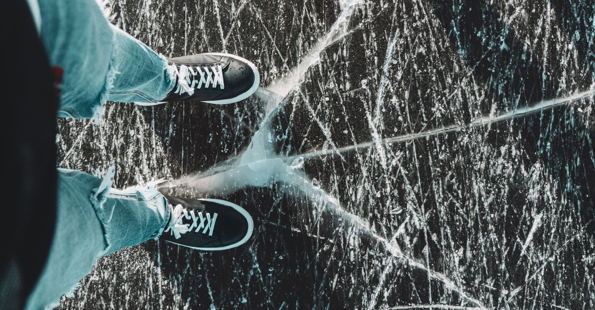
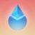

週次市場レポート2026年10月12日（月）

今週の3行まとめ
- 週足判定は4週連続で合格 — ただし薄氷。終値 $83,691 はライン $82,814 の +1.06% ちょうど（先週の +$3,000 前後から激減）で、木曜にはザラ場で $80,427 まで一度ラインを割っています。
- 10/7 の FOMC 議事録が「大半の参加者が年内あと1回の利上げ」を明文化。株・金・ドルが揃って高い中、BTC だけが週 −3.24% の独歩安となりました。
- ETF は週 −$681M の流出転換。一方でオンチェーンの大口は 1日で 24,073 BTC を取引所から引き出し（約7か月ぶりの規模）—「機関フローは逃げ、大口は押し目を吸収」のねじれが今週の核心です。
| 側 | 材料 | 位置づけ |
|---|---|---|
| 強気 | 週足終値 $83,691 で $82,814 を維持（4週目） | 「もう底を打った」説の反証はまだ出ていない |
| 強気 | 大口の押し目吸収: 24,073 BTC 引き出し＋中規模層が3週で +86,702 BTC | 価格下落中の蓄積 — 「健全な資金循環」の見方と矛盾しない実測 |
| 弱気 | $87,000 突破は3週間で3度目の失敗・週間 −3.24%・ザラ場でライン割れ | 判定の余裕が大幅に低下。「薄氷の合格」 |
| 弱気 | FOMC 議事録「年内あと1回」＋サービス業の価格指数 74（2022年以来の高さ） | 12月利上げ（織り込み約69%）側の材料が揃った週 |
| 弱気 | ETF 週 −$681M 流出転換・ETH の ETF は8営業日連続流出（−$641M） | 「フローは価格に1週遅れる」がまた成立。先週のゼロ化から暗転 |
| 両義的 | 警報器3種は「点灯継続・ただし加速は停止」 | 信用ショック化はいったん保留。来週の再加速有無が分岐 |
今週の一行: 「週足は薄氷の4連勝。利上げ観測は『10月スキップ・12月69%』で固定されたまま、議事録の『年内あと1回』と ETF 流出転換が重なり、強気の答え合わせが初めて負け越した週」。
答え合わせ — 4週目の合格は「薄氷の上」

先週「3週連続合格・ラインから $3,000 上」とお伝えした週足判定。今週も終値はラインの上でしたが、中身は一変しました。マージンは +$877 まで痩せ、木曜にはザラ場で一度割れています。
- 判定の結果
- 4週連続の合格 — ただし薄氷。終値 $83,691 はライン比 +$877（+1.06%）で、先週（+$3,000 前後）から余裕が激減。週間では −3.24% の下落週でした。
- ザラ場の割れ
- 10/8（木）に $80,427 まで下落し、判定ラインもその下の $82,000〜82,500 もザラ場では一度割れました。それでも +3.7% 戻して引けたため「実線はライン上」。先週の宿題だった「ヒゲと実線の区別」が、今度は下方向で試された1週間です。
- シナリオの現在地
- 講師想定は「③もう底を打った」60% ／「①+② まだ下がある」40%（10/5 据え置き）のまま。③を棄却する材料はまだ出ていませんが、$87K 3度目の失敗・ザラ場割れ・ETF 流出転換は①②側の残存リスクです。評価の更新は本日の配信で講師からお伝えします。
議事録の「年内あと1回」— 株・金・ドル高の中で BTC だけが売られた
10/7 公表の FOMC 議事録（9月会合分）は「大半の参加者が年内あと1回の利上げが必要になる可能性が高い」と明文化。発表直後は無風でしたが、当日夜から翌木曜にかけて BTC は $80,427 まで売られました。
- 金利の織り込み
- 10月 FOMC（10/27-28）は据え置き約81%で固定。12月の利上げは約69%のまま1週間変化なし。サービス業の価格指数 74.0（2022年7月以来の高さ）・消費者のインフレ期待 4.7% への上昇と、12月側の材料が揃いました。
- BTC だけが売られた
- S&P500 は週 +1.15% で最高値引け・金は週 +1.3%・ドルは4週連続高。その中で BTC は週 −3.24% の独歩安。10/8 のロング清算は $244M（全清算の83%）に達しました。
- 長期金利
- 10/5 に終値ベースで 5.31%（今期最高）を付け、週中ザラ場では 5.36% 台（2002年4月以来）のタッチ報道も。週後半は国債入札が好調で 5.22〜5.24% へ低下 — ただし「低下反転の初動」かはまだ判断できない誤差圏です。
警報器ダッシュボード — 3つとも点灯継続、ただし加速は停止
黒い縦線が先週の位置、色付きバーが今週の位置です。先週「8営業日連続拡大」だった②信用スプレッドは、拡大こそ止まりましたが 3% 台に居座りました。解除できた計器はゼロです。
外部リサーチの視点 — 34日間未公開・扱いを「不定期アーカイブ」へ
講師が定点観測している外部リサーチ（隔週レポート）は、本日時点で34日間未公開。隔週想定の2号分に加え、月次化と仮定した場合の想定日も過ぎました。今週から扱いを「主要情報源」から「不定期の答え合わせ用アーカイブ」へ変更し、公開を検知したら最優先で差分をお届けする運用に切り替えます。
| 前号の枠組み | 今週までの実際 | 評価 |
|---|---|---|
| 重要サポートが耐えれば「7月安値＝底」が確定 | 週足終値はライン上4週目。ただしザラ場割れ・マージン +1.06% まで縮小 | 肯定側継続 — 初めて「薄氷」の但し書き |
| 「50週線への最初の突破試行は通常失敗する」 | 終値は50週線の約 +8.6% 上（先週 +10% から縮小） | 定着は維持・距離は縮小 |
| 「年内の追加利上げは生きている」（少数派の読み） | FOMC 議事録が「大半が年内あと1回」と明文化 | 議事録が裏書き — 的中方向が続く |
| Q4 は金がビットコインに優位（リスクオフ想定） | 金 週 +1.3% vs BTC 週 −3.24% | 今週は「金＞BTC」が成立（再反転） |
複眼の確保は、他の外部識者の分析と本レポートの実測定点で代替します。次号が公開され次第、「底値判定ウィンドウの総括」を最優先でお届けします。
今週の急騰銘柄 — 下げ相場の独歩高3本、共通項は「近日アンロック」
+20% 超は先週の5件から3件へさらに減少。同期間の BTC は約 −3% なので、3本とも市場連動では説明できない固有材料型です。ただし今週の3本には気になる共通項があります — 3本とも、材料が「未確定の期待」で、しかも近日中にロック解除（供給増）を控えています。
 STRK約2倍
STRK約2倍要因: 運営が「イーサリアムから独立した L1 への移行を積極的に検討中」と表明（10/8・10/10 の2段ロケット）。「2027年までに世界初の完全耐量子ネットワーク」の目標も同時に提示されました。
見方: 期待先行・供給テスト目前 移行は「検討中」で計画・承認・時期すべて未確定。ネットワーク利用実態（TVL・手数料）は価格と大きく乖離しており、10/15 に流通の約1.7% のロック解除が最初の試金石です。
 BTW+46%
BTW+46%要因: 報酬キャンペーン終了直後の −49% 急落（10/2 の教材どおり）から、わずか10時間で +43% 反発し、その延長で最高値を更新。流通が総供給の27%しかない超低フロート構造のため、小さな資金でも大きく動きます。
見方: 構造的な脆さは不変 動きやすさは上にも下にも効く両刃です。11/2 に日次出来高の約7倍相当のロック解除が控えており、それが次の試金石。引き続き「観察する教材」の筆頭です。
 ZRO+29%
ZRO+29%要因: 財団がプロトコル収益でトークン買い戻しを実際に実行（累計約254万枚）＋新インフラ「手数料の75%を買い戻しに充てる」設計の詳細公開。先週からの買い戻しテーマの本命格です。
見方: 10/20 が答え合わせ本番 ロック解除（流通の約6%）の8日前に単日 +16% は、BTW が辿った「直前駆け込み→遅発剥落」コースの初期段階と相似形。ただし ZRO には買い戻しという吸収装置がある点が違い — 解除当日〜数日後の値持ちで、BTW 型か ENA 型かが判明します。
アンロック3連戦 — イベント教材の次ラウンド
| 日付 | 銘柄 | 規模 | 直前の形 | 観察ポイント |
|---|---|---|---|---|
| 10/15（木） | STRK | 流通の約1.7% | 発表直後の急騰中に突入 | 期待先行の持続性テスト第1弾。通過後も $0.10 台を維持できるか |
| 10/20（火） | ZRO | 流通の約6% | 8日前に単日 +16% の駆け込み形 | BTW 型（2日後の遅発剥落）か ENA 型（買い戻しが吸収）かの答え合わせ本番 |
| 11/2（月） | BTW | 日次出来高の約7倍 | 最高値圏で突入見込み | 低フロート銘柄に大型供給が当たるとどうなるか — 最警戒の教材 |
先週の答え合わせ（BTW −37% 遅発剥落／VVV +7.2%／ENA 無風）で学んだ「結果を分けるのは直前の値位置と売り手の所在」を、この3連戦にそのまま当てはめて観察します。
講師注目銘柄フォロー（配信で言及された銘柄）
| 銘柄 | 先週 | 今週 | 状況 |
|---|---|---|---|
 LDO | $0.4712 | $0.4471（−5.1%） | $0.4647 を再喪失。10/8 に $0.3947 まで急落後 V字回復。「突破→失敗→奪回→再喪失」の2巡目で、このラインが強い抵抗帯であることが確定的に |
 ONDO ONDO | $0.5063 | $0.5115（+1.0%） | 週中 $0.4635 まで押してほぼ全戻し。バンドは収縮から再拡張の初動に見える動き — 先週の配信で言及された「閉じ始めたら一旦利確」の判断材料として |
| ETH | $2,718 | $2,552（−4%前後） | BTC より弱い週。ETF は8営業日連続流出（計 −$641M）と逆風が続く |
| MORPHO | $2.40前後 | $2.46 | 前回 Q&A 言及銘柄。大きな動きなし — 前回高値の呪縛が続く「今はインしづらい」局面のまま |
先週の急騰銘柄・持続性チェック（レポートの定点観測）
※ こちらは配信での言及銘柄ではなく、先週のレポートで機械抽出した急騰銘柄の1週間後の答え合わせです。
| 銘柄 | 今週 | 結果 |
|---|---|---|
| NIGHT | +4.7% | BTC 安の週に逆行高。「実装済み＋次の材料あり」組は値持ちが良い — 「中身の質」仮説の新実例 |
| PUMP | −10.1% | 収益フリップが崩壊（30日収益が約25%減で逆転され、買い戻し原資も縮小）。先週の「収益がミーム市況に依存」という警戒がそのまま的中 |
| AAVE | −6〜7% | バーンの正式提案が出ないまま、急騰分の約1/3を返上。期待先行分の剥落が現実化し始めた |
| STX | +0.7% | 10/10 の第2期受け入れ枠（500 BTC）は充足率が未公表で、既存プレイヤー経由の振替が中心との情報のみ。機関の新規需要の実証としては前回より弱い |
アルトシーズン指数は 59 で3週連続横ばい。防衛ライン3本は NEAR 勝ち（$5.81・逆行高）／LDO 負け（$0.4647 再喪失）／ARB 攻防中（$0.1946・ゾーン下半分）の1勝1敗1攻防へ後退しました。※ 個別銘柄の記載は市場観察の記録であり、売買をすすめるものではありません。
来週に向けて — 監視ポイント
答えが出るイベント
- 10/14（水）9月 CPI・10/15（木）PPI — 議事録「年内あと1回」の後、初のインフレ実測。上振れなら12月利上げが固まり警報器①の再上昇を警戒、下振れなら「10月スキップ」が「年内スキップ」へ化けるかに注目。
- 今週足（10/18 日曜終値）の $82,814 維持 — 薄氷の次の週。割れた場合の節目は $80,427（今週安値）→ $77,000 → 50週線 $77,070。$87,000 への4度目の挑戦が起きるかも併記。
- アンロック3連戦の第1・第2ラウンド — 10/15 STRK・10/20 ZRO（上の表参照）。
警報器の定点観測
- 最優先: 信用スプレッド — 3.24%（先週ピーク）の再突破か、3% 割れへの回帰か。「定着」が続くようなら警戒を一段引き上げ
- 10年金利 5.22〜5.24% — 週後半の低下が反転初動か誤差かの見極め
- 原油 $92.5 — $90 割れ再挑戦の有無（中東情勢・ホルムズ海峡の攻撃件数も記録継続）
そのほか
- ETF フロー: CPI 通過後に流出が止まるか。ETH の8日連続流出の行方
- 米上場企業の月曜開示: 先週分は前回の 1/5 の小口購入で、資金は優先株買い戻しへ傾斜 — 2週連続になるか
- 外部リサーチの次号検知（公開されたら最優先で総括をお届け）・11/3 中間選挙の世論調査定点